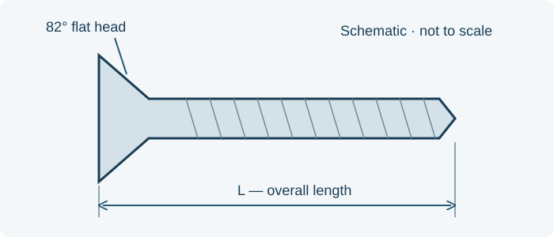

// TECHNICAL RESOURCES
MS35190 coarse-thread 82-degree flat-head screws.
Look up MS35190 part numbers, threads, lengths and head dimensions. Filter the reference table and request a quote for the selected screw.
// DIMENSIONS & PART IDENTIFICATION
82-degree flat-head screw length

Schematic only; not to scale. Letter labels are keys for this illustration. Use the applicable part specification for dimensions, tolerances and measurement conventions.
// PART IDENTIFICATION
Identify the head, drive and thread
MS35190 identifies cross-recessed, 82-degree flat countersunk-head machine screws in cadmium-plated carbon steel with UNC-2A threads. This selection covers 119 plain-screw references from 2-56 through 3/8-16. The reviewed drawing’s asterisked inactive-for-new-design #1 and 7/16-inch entries are outside this selection.
// REFERENCE SIZES
MS35190 part-number and dimension table
Reference sizes for identification and quotation. Availability is confirmed by inquiry; the entries do not indicate Webson stock.
No matching entries. Clear the filters or try a shorter search.
| Part number | Thread | Length per drawing (in) | Sharp head diameter max (in) | Nominal head angle | Request pricing |
|---|---|---|---|---|---|
| MS35190-209 | 2-56 | 0.125 | 0.172 | 82° | Quote MS35190-209 → |
| MS35190-210 | 2-56 | 0.188 | 0.172 | 82° | Quote MS35190-210 → |
| MS35190-211 | 2-56 | 0.250 | 0.172 | 82° | Quote MS35190-211 → |
| MS35190-212 | 2-56 | 0.312 | 0.172 | 82° | Quote MS35190-212 → |
| MS35190-213 | 2-56 | 0.375 | 0.172 | 82° | Quote MS35190-213 → |
| MS35190-214 | 2-56 | 0.438 | 0.172 | 82° | Quote MS35190-214 → |
| MS35190-215 | 2-56 | 0.500 | 0.172 | 82° | Quote MS35190-215 → |
| MS35190-216 | 2-56 | 0.625 | 0.172 | 82° | Quote MS35190-216 → |
| MS35190-217 | 2-56 | 0.750 | 0.172 | 82° | Quote MS35190-217 → |
| MS35190-218 | 2-56 | 0.875 | 0.172 | 82° | Quote MS35190-218 → |
| MS35190-219 | 4-40 | 0.125 | 0.225 | 82° | Quote MS35190-219 → |
| MS35190-220 | 4-40 | 0.188 | 0.225 | 82° | Quote MS35190-220 → |
| MS35190-221 | 4-40 | 0.250 | 0.225 | 82° | Quote MS35190-221 → |
| MS35190-222 | 4-40 | 0.312 | 0.225 | 82° | Quote MS35190-222 → |
| MS35190-223 | 4-40 | 0.375 | 0.225 | 82° | Quote MS35190-223 → |
| MS35190-224 | 4-40 | 0.438 | 0.225 | 82° | Quote MS35190-224 → |
| MS35190-225 | 4-40 | 0.500 | 0.225 | 82° | Quote MS35190-225 → |
| MS35190-226 | 4-40 | 0.625 | 0.225 | 82° | Quote MS35190-226 → |
| MS35190-227 | 4-40 | 0.750 | 0.225 | 82° | Quote MS35190-227 → |
| MS35190-228 | 4-40 | 0.875 | 0.225 | 82° | Quote MS35190-228 → |
| MS35190-229 | 4-40 | 1.000 | 0.225 | 82° | Quote MS35190-229 → |
| MS35190-230 | 4-40 | 1.250 | 0.225 | 82° | Quote MS35190-230 → |
| MS35190-231 | 4-40 | 1.500 | 0.225 | 82° | Quote MS35190-231 → |
| MS35190-232 | 6-32 | 0.125 | 0.279 | 82° | Quote MS35190-232 → |
| MS35190-233 | 6-32 | 0.188 | 0.279 | 82° | Quote MS35190-233 → |
| MS35190-234 | 6-32 | 0.250 | 0.279 | 82° | Quote MS35190-234 → |
| MS35190-235 | 6-32 | 0.312 | 0.279 | 82° | Quote MS35190-235 → |
| MS35190-236 | 6-32 | 0.375 | 0.279 | 82° | Quote MS35190-236 → |
| MS35190-237 | 6-32 | 0.438 | 0.279 | 82° | Quote MS35190-237 → |
| MS35190-238 | 6-32 | 0.500 | 0.279 | 82° | Quote MS35190-238 → |
| MS35190-239 | 6-32 | 0.625 | 0.279 | 82° | Quote MS35190-239 → |
| MS35190-240 | 6-32 | 0.750 | 0.279 | 82° | Quote MS35190-240 → |
| MS35190-241 | 6-32 | 0.875 | 0.279 | 82° | Quote MS35190-241 → |
| MS35190-242 | 6-32 | 1.000 | 0.279 | 82° | Quote MS35190-242 → |
| MS35190-243 | 6-32 | 1.250 | 0.279 | 82° | Quote MS35190-243 → |
| MS35190-244 | 6-32 | 1.500 | 0.279 | 82° | Quote MS35190-244 → |
| MS35190-245 | 6-32 | 1.750 | 0.279 | 82° | Quote MS35190-245 → |
| MS35190-246 | 6-32 | 2.000 | 0.279 | 82° | Quote MS35190-246 → |
| MS35190-247 | 8-32 | 0.125 | 0.332 | 82° | Quote MS35190-247 → |
| MS35190-248 | 8-32 | 0.188 | 0.332 | 82° | Quote MS35190-248 → |
| MS35190-249 | 8-32 | 0.250 | 0.332 | 82° | Quote MS35190-249 → |
| MS35190-250 | 8-32 | 0.312 | 0.332 | 82° | Quote MS35190-250 → |
| MS35190-251 | 8-32 | 0.375 | 0.332 | 82° | Quote MS35190-251 → |
| MS35190-252 | 8-32 | 0.438 | 0.332 | 82° | Quote MS35190-252 → |
| MS35190-253 | 8-32 | 0.500 | 0.332 | 82° | Quote MS35190-253 → |
| MS35190-254 | 8-32 | 0.625 | 0.332 | 82° | Quote MS35190-254 → |
| MS35190-255 | 8-32 | 0.750 | 0.332 | 82° | Quote MS35190-255 → |
| MS35190-256 | 8-32 | 0.875 | 0.332 | 82° | Quote MS35190-256 → |
| MS35190-257 | 8-32 | 1.000 | 0.332 | 82° | Quote MS35190-257 → |
| MS35190-258 | 8-32 | 1.250 | 0.332 | 82° | Quote MS35190-258 → |
| MS35190-259 | 8-32 | 1.500 | 0.332 | 82° | Quote MS35190-259 → |
| MS35190-260 | 8-32 | 1.750 | 0.332 | 82° | Quote MS35190-260 → |
| MS35190-261 | 8-32 | 2.000 | 0.332 | 82° | Quote MS35190-261 → |
| MS35190-262 | 8-32 | 2.250 | 0.332 | 82° | Quote MS35190-262 → |
| MS35190-263 | 8-32 | 2.500 | 0.332 | 82° | Quote MS35190-263 → |
| MS35190-264 | 8-32 | 2.750 | 0.332 | 82° | Quote MS35190-264 → |
| MS35190-265 | 8-32 | 3.000 | 0.332 | 82° | Quote MS35190-265 → |
| MS35190-266 | 10-24 | 0.188 | 0.385 | 82° | Quote MS35190-266 → |
| MS35190-267 | 10-24 | 0.250 | 0.385 | 82° | Quote MS35190-267 → |
| MS35190-268 | 10-24 | 0.312 | 0.385 | 82° | Quote MS35190-268 → |
| MS35190-269 | 10-24 | 0.375 | 0.385 | 82° | Quote MS35190-269 → |
| MS35190-270 | 10-24 | 0.438 | 0.385 | 82° | Quote MS35190-270 → |
| MS35190-271 | 10-24 | 0.500 | 0.385 | 82° | Quote MS35190-271 → |
| MS35190-272 | 10-24 | 0.625 | 0.385 | 82° | Quote MS35190-272 → |
| MS35190-273 | 10-24 | 0.750 | 0.385 | 82° | Quote MS35190-273 → |
| MS35190-274 | 10-24 | 0.875 | 0.385 | 82° | Quote MS35190-274 → |
| MS35190-275 | 10-24 | 1.000 | 0.385 | 82° | Quote MS35190-275 → |
| MS35190-276 | 10-24 | 1.250 | 0.385 | 82° | Quote MS35190-276 → |
| MS35190-277 | 10-24 | 1.500 | 0.385 | 82° | Quote MS35190-277 → |
| MS35190-278 | 10-24 | 1.750 | 0.385 | 82° | Quote MS35190-278 → |
| MS35190-279 | 10-24 | 2.000 | 0.385 | 82° | Quote MS35190-279 → |
| MS35190-280 | 10-24 | 2.250 | 0.385 | 82° | Quote MS35190-280 → |
| MS35190-281 | 10-24 | 2.500 | 0.385 | 82° | Quote MS35190-281 → |
| MS35190-282 | 10-24 | 2.750 | 0.385 | 82° | Quote MS35190-282 → |
| MS35190-283 | 10-24 | 3.000 | 0.385 | 82° | Quote MS35190-283 → |
| MS35190-284 | 1/4-20 | 0.312 | 0.507 | 82° | Quote MS35190-284 → |
| MS35190-285 | 1/4-20 | 0.375 | 0.507 | 82° | Quote MS35190-285 → |
| MS35190-286 | 1/4-20 | 0.438 | 0.507 | 82° | Quote MS35190-286 → |
| MS35190-287 | 1/4-20 | 0.500 | 0.507 | 82° | Quote MS35190-287 → |
| MS35190-288 | 1/4-20 | 0.625 | 0.507 | 82° | Quote MS35190-288 → |
| MS35190-289 | 1/4-20 | 0.750 | 0.507 | 82° | Quote MS35190-289 → |
| MS35190-290 | 1/4-20 | 0.875 | 0.507 | 82° | Quote MS35190-290 → |
| MS35190-291 | 1/4-20 | 1.000 | 0.507 | 82° | Quote MS35190-291 → |
| MS35190-292 | 1/4-20 | 1.250 | 0.507 | 82° | Quote MS35190-292 → |
| MS35190-293 | 1/4-20 | 1.500 | 0.507 | 82° | Quote MS35190-293 → |
| MS35190-294 | 1/4-20 | 1.750 | 0.507 | 82° | Quote MS35190-294 → |
| MS35190-295 | 1/4-20 | 2.000 | 0.507 | 82° | Quote MS35190-295 → |
| MS35190-296 | 1/4-20 | 2.250 | 0.507 | 82° | Quote MS35190-296 → |
| MS35190-297 | 1/4-20 | 2.500 | 0.507 | 82° | Quote MS35190-297 → |
| MS35190-298 | 1/4-20 | 2.750 | 0.507 | 82° | Quote MS35190-298 → |
| MS35190-299 | 1/4-20 | 3.000 | 0.507 | 82° | Quote MS35190-299 → |
| MS35190-300 | 5/16-18 | 0.375 | 0.635 | 82° | Quote MS35190-300 → |
| MS35190-301 | 5/16-18 | 0.438 | 0.635 | 82° | Quote MS35190-301 → |
| MS35190-302 | 5/16-18 | 0.500 | 0.635 | 82° | Quote MS35190-302 → |
| MS35190-303 | 5/16-18 | 0.625 | 0.635 | 82° | Quote MS35190-303 → |
| MS35190-304 | 5/16-18 | 0.750 | 0.635 | 82° | Quote MS35190-304 → |
| MS35190-305 | 5/16-18 | 0.875 | 0.635 | 82° | Quote MS35190-305 → |
| MS35190-306 | 5/16-18 | 1.000 | 0.635 | 82° | Quote MS35190-306 → |
| MS35190-307 | 5/16-18 | 1.250 | 0.635 | 82° | Quote MS35190-307 → |
| MS35190-308 | 5/16-18 | 1.500 | 0.635 | 82° | Quote MS35190-308 → |
| MS35190-309 | 5/16-18 | 1.750 | 0.635 | 82° | Quote MS35190-309 → |
| MS35190-310 | 5/16-18 | 2.000 | 0.635 | 82° | Quote MS35190-310 → |
| MS35190-311 | 5/16-18 | 2.250 | 0.635 | 82° | Quote MS35190-311 → |
| MS35190-312 | 5/16-18 | 2.500 | 0.635 | 82° | Quote MS35190-312 → |
| MS35190-313 | 5/16-18 | 2.750 | 0.635 | 82° | Quote MS35190-313 → |
| MS35190-314 | 5/16-18 | 3.000 | 0.635 | 82° | Quote MS35190-314 → |
| MS35190-315 | 3/8-16 | 0.500 | 0.762 | 82° | Quote MS35190-315 → |
| MS35190-316 | 3/8-16 | 0.625 | 0.762 | 82° | Quote MS35190-316 → |
| MS35190-317 | 3/8-16 | 0.750 | 0.762 | 82° | Quote MS35190-317 → |
| MS35190-318 | 3/8-16 | 0.875 | 0.762 | 82° | Quote MS35190-318 → |
| MS35190-319 | 3/8-16 | 1.000 | 0.762 | 82° | Quote MS35190-319 → |
| MS35190-320 | 3/8-16 | 1.250 | 0.762 | 82° | Quote MS35190-320 → |
| MS35190-321 | 3/8-16 | 1.500 | 0.762 | 82° | Quote MS35190-321 → |
| MS35190-322 | 3/8-16 | 1.750 | 0.762 | 82° | Quote MS35190-322 → |
| MS35190-323 | 3/8-16 | 2.000 | 0.762 | 82° | Quote MS35190-323 → |
| MS35190-324 | 3/8-16 | 2.250 | 0.762 | 82° | Quote MS35190-324 → |
| MS35190-325 | 3/8-16 | 2.500 | 0.762 | 82° | Quote MS35190-325 → |
| MS35190-326 | 3/8-16 | 2.750 | 0.762 | 82° | Quote MS35190-326 → |
| MS35190-327 | 3/8-16 | 3.000 | 0.762 | 82° | Quote MS35190-327 → |
Head diameter is the maximum theoretical sharp-head diameter from the reviewed drawing, not the minimum finished head diameter. The head angle is nominally 82 degrees, with drawing limits of 80–82 degrees. Short screws can have undercut heads with separate height requirements.
// LENGTH CONVENTION
Measure the correct length
Length L includes the countersunk head. The length column preserves the decimal reference values printed in the reviewed table, including 0.125, 0.188 and 0.312. These are not added acceptance tolerances. Match the 82-degree head to the specified seat; MS24693 uses a different 100-degree head.
// ORDERING EXAMPLES
Read the part number within its family
MS35190-221 identifies a 4-40 screw with a 0.250-inch overall reference length. MS35190-267 is a 10-24 by 0.250-inch reference. Dash numbers belong to this series; they cannot be reused as size codes for another MS family.
// MATERIAL AND CONFIGURATION
Preserve the finish and configuration
The reviewed issue specifies carbon steel and Type II, Class 3 cadmium plating to QQ-P-416 or MIL-C-81562. The table lists plain screws. An L after the dash number identifies a self-locking version under the reviewed requirements. Preserve the complete locking callout and its required issue when requesting pricing.
// RELATED REFERENCES
Compare related screw families
// DRAWING REQUIREMENTS
Match the governing drawing issue
Dimensions summarize MS35190F, sheets 1–2, 2 February 1976. These selected historical values identify the reviewed issue; the specification required by your drawing governs the supplied part.
// BUYER CHECKLIST
Prepare the requirement for quotation
- Complete designation, including all material, finish and locking suffixes.
- Quantity, required delivery date and controlling drawing or specification issue.
- Required certificates, source restrictions and lot traceability.
// SOURCE WITH WEBSON
Have a part number or bill of material?
Send the complete designation, quantity, required delivery date and documentation requirements. Webson will review your requirement for quotation.